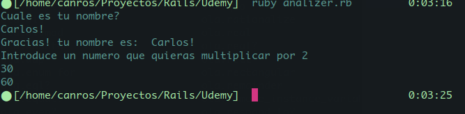
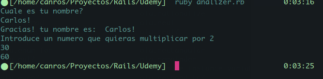
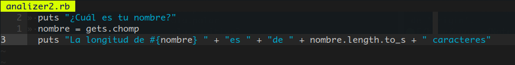

Created miércoles 26 diciembre 2018
Para poder capturar la entrada de text en la terminal se utiliza el objeto gets.
puts "Cuale es tu nombre?"
primer_nombre = gets.chomp
puts "Gracias! tu nombre es: #{primer_nombre}"
primer_nombre = gets.chomp
puts "Gracias! tu nombre es: #{primer_nombre}"
puts "Introduce un numero que quieras multiplicar por 2"
input = gets.chomp
#Convertimos el numero a integer.
puts input.to_i * 2
input = gets.chomp
#Convertimos el numero a integer.
puts input.to_i * 2
Ejecución


===== Ejercicio Analizador de texto =====
Crear un programa sencillo en Ruby para Contar la longitud de la cadena y al final imprimirlo al reves.
Crear un programa sencillo en Ruby para Contar la longitud de la cadena y al final imprimirlo al reves.
Código
puts "¿Cuál es tu nombre?"
nombre = gets.chomp
puts "La longitud de #{nombre} " + "es " + "de " + nombre.length.to_s + " caracteres"
nombre = gets.chomp
puts "La longitud de #{nombre} " + "es " + "de " + nombre.length.to_s + " caracteres"
